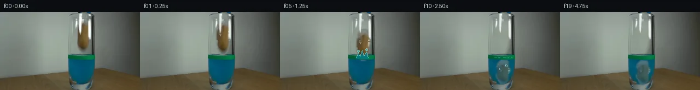
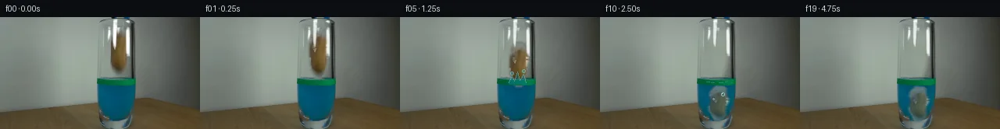
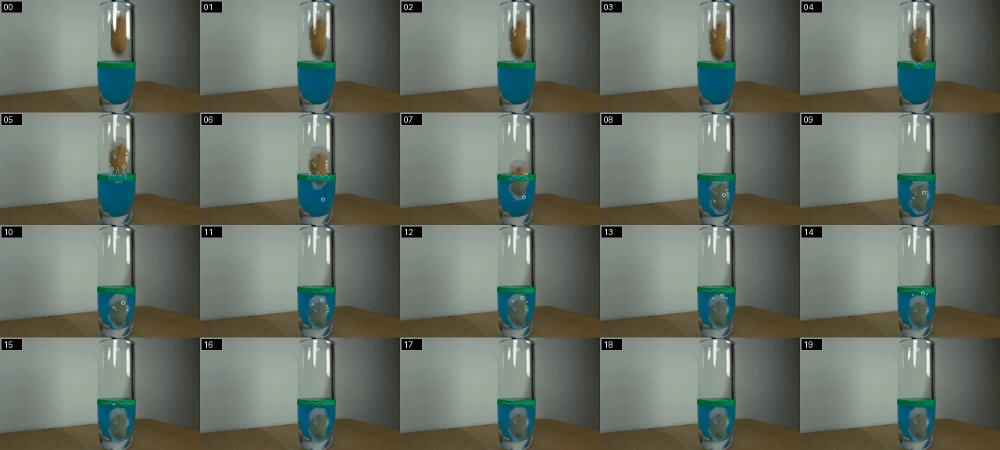
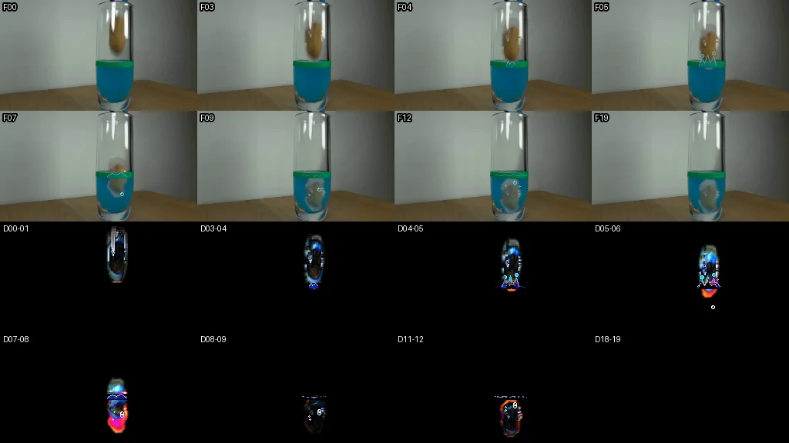

V0 · 初版
2026-11-05T06:47:34.519684+00:00 · RGB 6ba798ea63ca
![]()
Observable Generation Trace
把最终像素视频、Harness 冻结的每轮候选、真实工具事件和 Agent 自述放在同一页。可观测证据与模型自述分开标记，避免把“模型说它检查过”误当成真实工具调用。
![首帧]()
Static locked-off single-shot with fixed frame throughout filmed with constant framerate in real-time. The scene shows a realistic scientific demonstration. The scene only contains the described setup and actions. The blue-black grabber tool was holding the potato at the inner rim of the glass containing the blue liquid and the green water level marking. The blue-black grabber releases the potato into the glass containing blue liquid with a green band marking the water level.
首帧显示在左侧播放器初始画面。Track 权限、隔离和 tensor 一致性来自 run manifest，而不是 METHOD.md。
默认勾选初版和最终版；可选其他版本一起同步播放。仅检查图更新的连续重复快照已合并，回退旧视频仍保留为一次修订。
Observable events
来源：events.jsonl + run manifest
视觉工具可用，但 events.jsonl 没有记录到成功的输出 PNG 读取；存在 self-refine 候选，不等于存在可验证的视觉 self-refine。
Frozen candidates
每张图来自该 round 的真实 00 / 01 / 05 / 10 / 19 帧

pixels 197f62776382f2c2 · code 696614914426e753
--- previous/generate.py
+++ current/generate.py
@@ -0,0 +1,370 @@
+#!/usr/bin/env python3
+"""Generate the 20-frame locked-camera potato release sequence.
+
+The renderer uses only first_frame.png. It builds a local clean plate behind
+the source potato, transforms a softly masked copy of the photographed potato,
+and draws compact analytic water effects inside the photographed vessel.
+"""
+
+from pathlib import Path
+import math
+import numpy as np
+from PIL import Image, ImageDraw, ImageFilter
+
+
+ROOT = Path(__file__).resolve().parent
+SRC_PATH = ROOT / "first_frame.png"
+FRAMES_DIR = ROOT / "frames"
+W, H = 256, 144
+N = 20
+SURFACE_Y = 84
+
+
+def smooth_mask_polygon(size, points, blur=1.15):
+ m = Image.new("L", size, 0)
+ ImageDraw.Draw(m).polygon(points, fill=255)
+ return m.filter(ImageFilter.GaussianBlur(blur))
+
+
+def make_clean_plate(src):
+ """Remove the original potato while retaining the cylindrical glass."""
+ arr = np.asarray(src).astype(np.float32).copy()
+ # Soft silhouette slightly wider than the brown body/shadow.
+ pts = [(146, 8), (158, 8), (162, 15), (164, 30), (163, 53),
+ (160, 68), (156, 77), (148, 78), (142, 70), (139, 57),
+ (139, 29), (142, 15)]
+ mask = np.asarray(smooth_mask_polygon((W, H), pts, 2.0), dtype=np.float32) / 255.0
+
+ fill = arr.copy()
+ # The unobstructed left interior provides the wall color seen through glass.
+ # Add a gentle horizontal cylindrical illumination profile.
+ for y in range(6, 82):
+ base = np.mean(arr[y, 132:138], axis=0)
+ for x in range(137, 166):
+ u = (x - 151.5) / 15.0
+ cylinder = np.array([3.0, 4.0, 3.0]) * (1.0 - u * u)
+ fill[y, x] = np.clip(base + cylinder, 0, 255)
+ a = mask[..., None]
+ clean = arr * (1.0 - a) + fill * a
+ return Image.fromarray(np.uint8(np.clip(clean, 0, 255)))
+
+
+def make_potato_sprite(src):
+ """Extract the photographed potato and suppress highlights belonging to glass."""
+ box = (137, 7, 166, 79)
+ crop = np.asarray(src.crop(box)).astype(np.float32)
+ ch, cw = crop.shape[:2]
+ # Coordinates relative to crop; shaped from the visible potato boundary.
+ poly = [(9, 2), (20, 2), (24, 8), (26, 22), (25, 45),
+ (22, 61), (18, 69), (11, 70), (6, 63), (3, 51),
+ (3, 22), (5, 8)]
+ alpha = smooth_mask_polygon((cw, ch), poly, 1.2)
+
+ # Fill the two stationary white glass streaks with nearby potato texture so
+ # the streaks do not travel with the falling object. They are restored later.
+ rgb = crop.copy()
+ mx = crop.max(axis=2)
+ mn = crop.min(axis=2)
+ sat = (mx - mn) / np.maximum(mx, 1)
+ glassy = (sat < 0.14) & (mx > 137)
+ for y in range(ch):
+ valid = (~glassy[y]) & (np.asarray(alpha)[y] > 80)
+ xs = np.flatnonzero(valid)
+ if not len(xs):
+ continue
+ for x in np.flatnonzero(glassy[y] & (np.asarray(alpha)[y] > 20)):
+ nearest = xs[np.argmin(np.abs(xs - x))]
+ rgb[y, x] = crop[y, nearest]
+ # Mild horizontal smoothing removes seams but preserves the photographic grain.
+ tex = Image.fromarray(np.uint8(np.clip(rgb, 0, 255))).filter(
+ ImageFilter.GaussianBlur(0.35)
+ )
+ rgba = tex.convert("RGBA")
+ rgba.putalpha(alpha)
+ return rgba
+
+
+def glass_highlight_overlay(src, clean):
… diff truncated; 283 more lines …
pixels f362286968d5f604 · code 9eafaf896813aa87
--- previous/generate.py
+++ current/generate.py
@@ -127,11 +127,11 @@
rgb = row[active, :3].astype(np.float32)
depth = min(1.0, (y - SURFACE_Y) / 42.0)
tint = np.array([7.0, 94.0, 127.0])
- mix = 0.32 + 0.14 * depth
+ mix = 0.21 + 0.09 * depth
rgb = rgb * (1.0 - mix) + tint * mix
rgb = (rgb - 96.0) * 0.88 + 96.0
row[active, :3] = np.uint8(np.clip(rgb, 0, 255))
- row[active, 3] = np.uint8(row[active, 3].astype(np.float32) * (0.90 - 0.05 * depth))
+ row[active, 3] = np.uint8(row[active, 3].astype(np.float32) * (0.96 - 0.03 * depth))
la[y] = row
frame.alpha_composite(Image.fromarray(la))
@@ -150,7 +150,7 @@
envelope = max(0.0, 1.0 - abs(x - 151.5) / (span + 1))
y = SURFACE_Y + amp * envelope * math.cos((x - 151.5) * 0.58 - age * 1.35)
pts.append((x, y))
- d.line(pts, fill=(66, 190, 194, 150), width=1)
+ d.line(pts, fill=(75, 174, 181, 115), width=1)
if 5 <= i <= 11:
d.arc((129, SURFACE_Y - 1, 171, SURFACE_Y + 7), 190, 350,
fill=(10, 91, 120, max(25, 115 - age * 11)), width=1)
@@ -167,15 +167,15 @@
if i in crowns:
pts = crowns[i]
poly = [(pts[0][0], 86)] + pts + [(pts[-1][0], 86)]
- d.polygon(poly, fill=(4, 126, 155, 170))
- d.line(pts, fill=(105, 210, 207, 215), width=1)
+ d.polygon(poly, fill=(4, 126, 155, 112))
+ d.line(pts, fill=(103, 195, 194, 145), width=1)
# A few beads remain within the glass mouth.
drops = {5: [(143, 72, 2), (158, 69, 2)],
6: [(140, 76, 1), (163, 75, 1)],
7: [(158, 77, 1)]}.get(i, [])
for x, y, r in drops:
- d.ellipse((x-r, y-r, x+r, y+r), fill=(65, 183, 191, 190),
- outline=(151, 229, 218, 185))
+ d.ellipse((x-r, y-r, x+r, y+r), fill=(65, 170, 181, 125),
+ outline=(137, 211, 204, 140))
# Air released by the wet potato: bubbles rise after immersion.
if 6 <= i <= 17:
@@ -240,8 +240,8 @@
(19.5, .94, -.5, 151.3),
(28.5, .88, -1.0, 151.0),
(39.5, .82, 1.0, 151.3),
- (53.5, .76, 2.0, 151.8),
- (70.0, .71, 1.0, 152.1),
+ (57.5, .76, 2.0, 151.8),
+ (80.0, .71, 1.0, 152.1),
(82.0, .68, -0.5, 152.2),
(86.0, .67, -1.4, 151.7),
(88.5, .66, -0.7, 151.0),pixels f362286968d5f604 · code 48709973b15b1907
--- previous/generate.py
+++ current/generate.py
@@ -8,6 +8,7 @@
from pathlib import Path
import math
+import shutil
import numpy as np
from PIL import Image, ImageDraw, ImageFilter
@@ -279,7 +280,11 @@
im.alpha_composite(edge)
im = im.convert("RGB")
p = FRAMES_DIR / f"{i:02d}.png"
- im.save(p, format="PNG", optimize=False)
+ if i == 0:
+ # Preserve not only decoded pixels but the exact source PNG bytes.
+ shutil.copyfile(SRC_PATH, p)
+ else:
+ im.save(p, format="PNG", optimize=False)
out.append(np.asarray(im, dtype=np.uint8))
return np.stack(out, axis=0)
@@ -353,6 +358,8 @@
raise AssertionError(f"PNG/tensor mismatch at frame {i}")
if not np.array_equal(frames[0], np.asarray(Image.open(SRC_PATH).convert("RGB"))):
raise AssertionError("Frame 00 differs from first_frame.png")
+ if (FRAMES_DIR / "00.png").read_bytes() != SRC_PATH.read_bytes():
+ raise AssertionError("Frame 00 is not a byte-for-byte source copy")
def main():Final visual checks
Harness 保存的最终产物


Agent claims
以下文字由生成 Agent 撰写，不等同于工具证据
(0,122) through (126,110) to (255,126).x=149; exterior silhouette is approximately x=125..173, y=1..143. The upper rim is around y=3..7; the bottom/foot is around y=132..143.x=126..171, y=84..132, with a curved lower boundary and glass highlights. The surface/water-level marker is a vivid green band approximately x=124..172, y=79..87.x=141..162, y=12..77, with its center near (151,45). It tapers and rounds at the bottom, has a darker right edge, a bright left-center highlight, and is partly refracted by the cylindrical glass.x=155..162, extending to the upper rim. The rest is out of frame.The release occurs just after the locked initial pose. The potato accelerates downward under gravity, crosses the green-marked surface, creates a compact splash and ripples constrained to the narrow glass, then continues downward with strong drag. Refraction and blue tint strengthen as it becomes submerged. The grabber tip retracts upward and disappears. The potato remains visible through the blue liquid and settles low in the vessel with small damped oscillation; bubbles rise after entry.
| Frame | Time | Planned state |
|---|---|---|
| 00 | 0.00 s | Exact source image: potato held at inner rim; liquid flat at green marker. |
| 01 | 0.25 s | Grabber opens/releases; potato has barely begun to drop; tip starts retracting. |
| 02 | 0.50 s | Potato drops visibly, still wholly above the marked surface. |
| 03 | 0.75 s | Faster descent; lower tip approaches the green band. |
| 04 | 1.00 s | Lower potato tip touches/crosses the surface; narrow upward blue/green crown begins. |
| 05 | 1.25 s | Entry splash peaks; lower portion is blue-tinted/refracted; droplets stay inside the rim. |
| 06 | 1.50 s | Potato is roughly half submerged; ripples spread laterally; first bubbles appear. |
| 07 | 1.75 s | Potato mostly submerged; splash collapses; downward motion slows sharply. |
| 08 | 2.00 s | Potato fully beneath the surface, displaced liquid slightly raised; several bubbles rise. |
| 09 | 2.25 s | Continues sinking through blue liquid with viscous drag; surface ripple amplitude reduces. |
| 10 | 2.50 s | Near lower half of glass; slight clockwise tilt/wobble begins. |
| 11 | 2.75 s | Reaches low point near curved base; bubbles trail upward. |
| 12 | 3.00 s | Small rebound upward from the curved bottom/liquid cushioning. |
| 13 | 3.25 s | Rebound damps; potato rotates minutely back toward vertical. |
| 14 | 3.50 s | Settles downward again; surface nearly level. |
| 15 | 3.75 s | Low resting position; only tiny bob/wobble and bubbles remain. |
| 16 | 4.00 s | Resting; one bubble reaches the surface and makes a small ring. |
| 17 | 4.25 s | Motion almost stopped; faint residual ring. |
| 18 | 4.50 s | Stable final state, potato submerged low in blue liquid. |
| 19 | 4.75 s | Stable hold; locked camera and unchanged setup. |
This sequence is a deterministic local pixel animation built only from first_frame.png and the supplied prompt. No external assets, models, masks, engines, or network services are used.
pixels.npz stores a (20, 144, 256) uint32 array named pixels, packed as 0xRRGGBB. The generator reloads every PNG and asserts exact equality to this tensor. Frame 00 is copied byte-for-byte from first_frame.png, and both byte equality and decoded RGB equality are asserted.